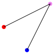

3. Regular polygons
In this example we will see several ways of drawing regular polygons.
We begin by importing
metapict
and setting the “curve pict size”.
When a curve is drawn by
draw
, the curve is drawn on a pict with this size.
Let’s draw a little test curve to see this.
|
| > (draw (point "red" (pt -1 0)) | | (point "violet" (pt 1 1)) | | (point "blue" (pt 0 -1)) | | (curve (pt -1 0) -- (pt 1 1) -- (pt 0 -1))) |
|
 |
We see that the default user coordinates has an
\(x\)-range
\[\text{from } x_\text{min}=-1 \text{ to } x_\text{max}=1, \]and an
\(y\)-range given by
\[\text{from } y_\text{min}=-1 \text{ to } y_\text{max}=1. \]We will stick with this default window for now.
The function call
(pt@d r θ)
will return the point
\(P\) that a distance
\(r\) from
the origin
\(O(0,0);\) the angle between the
\(x\)-axis and
\(P\) will be
\(θ\) degrees.
The d
in pt@d
stands for degrees.
Using this function, we can write our example as:
In a similar fashion we can draw a regular polygon with
\(n=4\) sides:
We begin to see a pattern. The points on the regular polygon
with
\(n\) sides can be computed like this:
In order to draw the polygon, we need to add the path connector
--
between each point – and append
-- cycle
.
Since
curve
is a macro, we can’t apply
curve
to our path description,
instead we use the function version named
curve*
.
And we can now draw a regular polygon with
\(n=6\) sides: